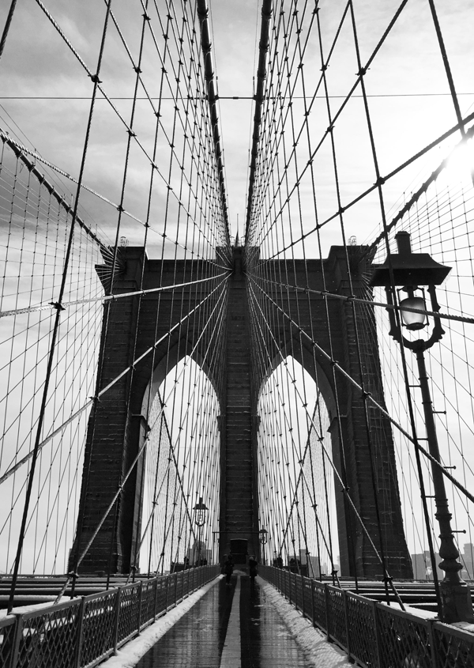
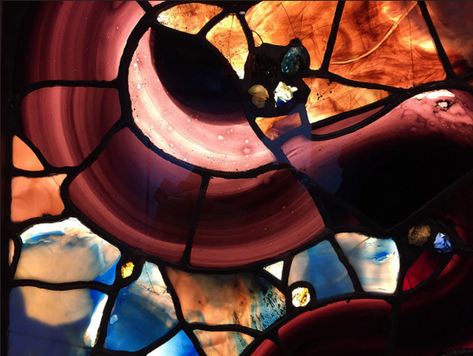

For part of our AAD118 module we have to done some photography, this includes researching different photographers, photography styles, basic camera usage, angles and lenses that can be used.
The main thing we have to achieve while doing this module is how to communicate using image and what you want the images to potray.
The first thing I thought I should research was the basics of photography and how to take a good photo. The basics of photography would be how camera angles and shots effect a photo. When researching this I found an article that was very helpful to be because it would be applied to our theme of architecture, it was from Digital camera world. This article went through different ways that camera angles can impact the shot and give unusual perspectives on the object you are photographying.
One of the new camera angle ideas was to shoot straight up, which is what they called a 'worm's eye view' this creates a very dramatic effect of how big things can be around you and shows it through an image. I thought this angle would be great for architecture as buildings are usually build on a large scale and are massive compared to a human.
Another unusual angle that is mentioned in this article is to get down low, this is the same sort of angle as the worm's eye view but it can be used to take every day objects. It is said to add more depth to an image as the camera sees this from a low perspective
There was also another article on the same website called 16 tips for shooting abstract architecture photography, I thought this would help me achieve quirky images that would look different and from everyone elses. Things I learnt from reading this was that the perfect day can change the setting of the architecture as the sky is almost always in the photo if taking it of the whole building, wait until the 'Golden Hour' at sunset this is when you can achieve the most dramatic scenes from the magical golden light that comes off the sun. Keep your distance from the architecture because if you are too close it can distort the image and also to keep the camera as level as possible to stop distortion from happening.
I wanted to research some photographers that are known for their photos of architecture to discover what looks good, if there is a pattern in the angles each of them use and what I can learn from their expertise.
While researching photography and photographers I have also been concentrating a little bit on New York as I would be visiting their and I would like to gain some inspiration on what to take photos of and how I should do it. I have found heaps of great and charming photos that people of taken in and around of the most iconic buildings and structures of throughout NYC which it is not short of!
Randy Scott Slavin is a New York based Photographer and award winning Director who looks at phototography in a different perspective than many other photographers out there. His gallery named Alernative Perspectives show a variety of different locations shown through a 360 view fish eye lens, the images look incredible and really does give the viewer a different viewing experience than just an average photo. I find these images very inspiring and the use of light, perspective and focus really shines through these photographs. It almost feels like you are being sucked into the photo, they are so cool!
Daniel Hewitt is a photographer who is interested in the aesthetics of architecture and philosophy, he does a lot of comercial work as well as his own projects.
I really like Daniel's work and how a lot of it is in black and white which gives the techniqual architecture a simple look about it that some people may like. I love the pattern of this photograph called 'transmission' by Daniel, it is so sharp and has a unique angle to it, I am starting to realise that I like the look of the camera angle pointing upwards, I think it gives off a great effect that can't really be achieved as well by using other camera angles. I also like the way this particular image has been rotated and gives it a more art feel to it rather than ust an ugly pylon that not many poeple enjoy looking at.
Dave Beckerman has taken architectural photographs all over the world, he has taken a lot of his photographs from a different perspective from a lot of other people I have researched. A lot of his photos are from different angles and there are other objects in the shot such as trees and the environment around it instead of jsut focusing on how big the building is. He also focuses on the little details work, I find his photographs a little bit dated and by researching him it has showed me what I would not want to achieve from some of my images.
As I would be using my Iphone6 to take photographs I thought it would be appropriate to research a few Iphonographers that would inspire me to take the best photos with the same equipment as them.
I liked Dan Rubins photography, I had seen him at a conference and he seemed to know a lot about cameras, photography and had an interest in travel which is what interested me into looking more into his work. He has a wide range of photography and as he travels around a lot he gets a lot of great shots that not many people would get. I like how his photographs seem to be taked from different perspectives as in some one looking at an object or space and being the person in the first line of perspective.
I liked the style of Dan Cole's photography it looked very simple and usually concentrating on just one thing. His photos are mainly of architectural objects or landscape which a both taken with an Iphone. The photos he has taken close up of objects is unusual because they are taken at odd angles that make the picture feel very different. I would like to achieve this sort of style and try to come up with new angles and ways of looking at buildings within my own photography.
When looking at photographers in general I find it very interesting when they create images in black and white, I think it is because there is more of a skill to getting the balance of light and object right within the photograph. Greg Schmigel's photographs are great, even tho they have no colour the brightness still seems to project out of them. I wanted to create a series of photo that could potentially do that and I generaly just love the timeless look that black and white photography achieves.
New York is renownd for some of the best and most iconic architectural buildings and structures in the world and here is my proof.
Brooklyn Bridge, NYC.

Concrete Jungle, NYC.
View from the Immagration Building, Ellis Island
Sticker bomb Brooklyn Bridge, NYC.
Go Pro shot of The Flatiron, NYC.
Macro Shot of Brooklyn Bridge, NYC.
Stained Glass, The Met, NYC.

View of One World Trade Centre, Ellis Island.
Damage, Immagration Building, Ellis Island.
Door Handle, New York Public Library, NYC.
Lady Liberty's crown, NYC.
Up in the blue, NYC.
For my book cover research I am going to research illustrators, book cover designs and also do a little bit of research about the books I am going to create book covers for.
I am going to go with a classic horror theme to my book cover designs which will include Frankenstein, Dracula and Jekyll & Hyde. I chose this this theme because I thought it would be interesting to mix it up a little bit a produce something that isnt particularly pradictable when it comes to the horror genre, I also chose to design these certain books because they are known all over the world and are probably the best known horror storys in that particular genre.
I am going to research a few illustrators that I already have an interest in and that will inspire me to create a great design for my book covers that will do the stories justice.
After seeing Mr Bingo at a conference I found him extremely inspirational, his work is pretty special and unique from everyone elses out there at the minute. Other artists have a similar style but his mode of work is a lot different. I like the style of his work because it looks very real as an illustration yet it is had just been sketched out, I think this is because of the extra lines and dot marks he adds in for texture.
I really love how all of his work is offencive in some shape or form, it is surely my type of humour. He also uses a lot of stereotypical things in his illustrations that add to the humour and allow people to connect with what he is trying to convey which is very interesting.
Peter Strain is an illustrator from Belfast. His work is amazing, I love how detailed it is. Most of the illustrations he does are portraits of people but the way he draws is very life like but the use of detail and colour in his drawings make them look very querky which I like. His work also looks rough and for me that gives it more personality rather than straight lines and perfect pencil marks.
Kate Gibb is a painter/illustrator, her work is very texturized and she uses a lot of abstract shapes to make patterns. I liked the boldness of her work and how it jumps out at you with all of the colour. As she is a printmaker she layers a lot of her prints to create different textures, I love the effect this gives and would love to see how it would turn out as a book cover.
Coralie Bickford-Smith is a book designer for Penguin Books, she has designed a who series of cloth bound books that really interested me. The books are all cloth bound and are usually designed with a pattern which is printed onto the cloth, I really like how the books look old and have a vintage feel to them. The designs of these books really caught my eye and inspired me greatly when creating my book covers as I wanted to go for a pattern design relating to each of the book covers similar to Coralie's style.

I only really generally knew about each of the books, I probably should of read them to get a greater undersanding of what the books were about but I just researched and read what people said about them instead which saved myself a lot of time and worked just as good.
"Frankenstein is infused with elements of the Gothic novel and the Romantic movement and is also considered to be one of the earliest examples of science fiction. Brian Aldiss has argued that it should be considered the first true science fiction story, because unlike in previous stories with fantastical elements resembling those of later science fiction, the central character "makes a deliberate decision" and "turns to modern experiments in the laboratory" to achieve fantastic results. It has had a considerable influence across literature and popular culture and spawned a complete genre of horror stories, films, and plays." - Wikipedia.
"Famous for introducing the character of the vampire Count Dracula, the novel tells the story of Dracula's attempt to move from Transylvania to England so he may find new blood and spread the undead curse, and the battle between Dracula and a small group of men and women led by Professor Abraham Van Helsing." - Wikipedia.
"It is about a London lawyer named Gabriel John Utterson who investigates strange occurrences between his old friend, Dr. Henry Jekyll,and the evil Edward Hyde.
The work is commonly associated with the rare mental condition often called "split personality", referred to in psychiatry as dissociative identity disorder, where within the same body there exists more than one distinct personality. In this case, there are two personalities within Dr. Jekyll, one apparently good and the other evil. The novella's impact is such that it has become a part of the language, with the very phrase "Jekyll and Hyde" coming to mean a person who is vastly different in moral character from one situation to the next." - Wikipedia.
To design each of these books I found out a few main characteristics of the book and what poeple associate with each of them. By doing this I created icons that would potray the books accurently and give a hint of the story.
Frankenstein
Dracula
Jekyll & Hyde
To create my infographic I mainly researched illustrations and designs of other infographics and used my own style and graphics to create the infographic.
The theme for my infographic is World Population I collected information from http://www.worldometers.info/world-population/ this was very useful because I screen grabbed the information I would include within my infographic.
These are some of the images that inspired me to create my infographic.
This is my own infographic design that I am pretty happy with.